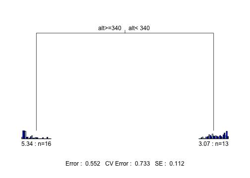
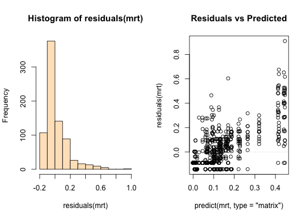
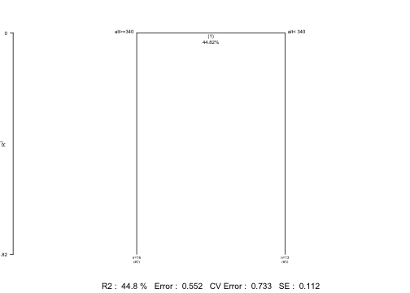
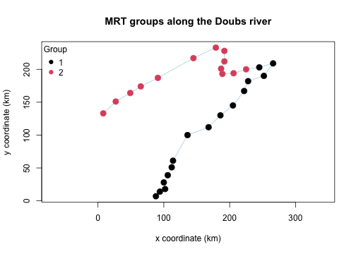

A worked example: multivariate regression trees on the Doubs fish data
Source:vignettes/mrt-worked-example.Rmd
mrt-worked-example.RmdIntroduction
This vignette walks through a complete multivariate regression tree
(MRT) analysis, from raw data to interpreted result, using
mvpart and its companion package
MVPARTwrap.
The general approach follows the presentation of MRT in Borcard, Gillet & Legendre’s Numerical Ecology with R (2nd edition, Springer, 2018), Section 4.11 — readers wanting a deeper treatment of the method, its assumptions, and its place among other clustering and ordination techniques should consult that book directly.
The data
We use the Doubs river fish dataset (Verneaux 1973), a classic
dataset in numerical ecology consisting of fish abundances,
environmental variables, and spatial coordinates for sites along the
Doubs river (France/Switzerland border). It’s conveniently bundled with
the ade4 package.
data(doubs, package = "ade4")
spe <- doubs$fish # species (fish) abundance data
env <- doubs$env # environmental variables
xy <- doubs$xy # spatial coordinates of the sitesOne site (site 8) has no fish at all and is dropped in this example.
spe <- spe[-8, ]
env <- env[-8, ]
xy <- xy[-8, ]We then normalize the species abundances, a standard step before fitting an MRT on community composition data (Legendre & Gallagher 2001).
Indeed, mvpart builds its tree by minimizing a
sum-of-squares criterion, which is geometrically equivalent to Euclidean
distance between sites. The problem is that Euclidean distance on raw
abundances is a poor ecological measure: it’s dominated by highly
abundant species, and it can treat two sites sharing no species at all
as “similar” simply because their total abundances happen to be alike
(the classic “double-zero” problem).
The standard fix (Legendre & Gallagher 2001) is to transform the data beforehand so that ordinary Euclidean distance on the transformed data corresponds to an ecologically meaningful distance. For the chord distance specifically:
# Chord transformation
spe.chord <- decostand(spe, "normalize")An alternative, and equally common, choice is the Hellinger transformation, which uses the square root of relative (rather than raw) abundances:
# Hellinger transformation (alternative to the chord transformation; not used further below)
spe.hel <- decostand(spe, "hellinger")Both the chord and Hellinger transformations were originally proposed
by Legendre & Gallagher (2001) to make Euclidean-distance-based
methods (like MRT, PCA, or RDA) ecologically meaningful for community
composition data. Both transformations belong to the broader
Box-Cox-chord family of transformations (Legendre &
Borcard 2018), which generalizes the chord transformation by first
applying a Box-Cox power transformation to the raw abundances before
normalizing to the chord distance. In this framework, the Hellinger
transformation corresponds to the specific case of a square-root power
transformation (exponent 0.5). The Hellinger transformation is often
preferred when a somewhat stronger down-weighting of highly dominant
species is desired, owing to its square-root step, or when one wants to
remove differences in total abundance across sites, since it works on
relative rather than absolute abundances. Either transformation is a
reasonable default choice. This vignette continues with the
chord-transformed data (spe.chord), for consistency with
the example from Borcard, Gillet & Legendre’s Numerical Ecology
with R (2nd edition, Springer, 2018).
Fitting the MRT
mvpart extends rpart’s single-response
regression tree to a multivariate response: instead of splitting on the
variance of one variable, each split is chosen to minimize the total sum
of squares across all species simultaneously. The result is a
tree that partitions the sites into groups that are as homogeneous as
possible in their overall species composition, using the environmental
variables as candidate splitters.
mrt <- mvpart(
data.matrix(spe.chord) ~ .,
data = env,
xv = "1se", # select tree size via the 1-SE rule (non-interactive)
xvmult = 100, # number of cross-validation replicates
xval = 29 # as many cross-validation groups as rows in the data, instead of the usual 10, owing to the small number of observations
)
#> X-Val rep : 1 2 3 4 5 6 7 8 9 10 11 12 13 14 15 16 17 18 19 20 21 22 23 24 25 26 27 28 29 30 31 32 33 34 35 36 37 38 39 40 41 42 43 44 45 46 47 48 49 50 51 52 53 54 55 56 57 58 59 60 61 62 63 64 65 66 67 68 69 70 71 72 73 74 75 76 77 78 79 80 81 82 83 84 85 86 87 88 89 90 91 92 93 94 95 96 97 98 99 100
#> Minimum tree sizes
#> tabmins
#> 2 3 4 6 7 8 9
#> 1 6 1 1 1 40 50
The xv argument controls how the final tree size is
chosen. "pick" lets you click interactively on the
cross-validation plot (useful in an interactive session, but not
suitable for a non-interactive vignette build); "1se" and
"min" select the size automatically, using the
one-standard-error rule and the minimum cross-validated error
respectively. We use "1se" here, which tends to favor a
more parsimonious (smaller) tree.
The plotted tree shows, at each split, the environmental variable and threshold used, along with a small barplot of the relative species composition in each resulting group. A given variable may be used several times along the course of the successive binary partitions.
Checking the fit
As with any regression model, it’s worth checking the residuals
before trusting the tree’s splits. For a multivariate response,
residuals() returns, for each observation, the deviation
between its observed and predicted (group-mean) values across all
response variables combined: a large residual flags a site whose species
composition deviates substantially from its assigned group’s average
profile.
Two simple diagnostic plots are useful here: a histogram of the residuals, to check they’re roughly centered around zero without a strong skew or heavy tail, and a plot of residuals against predicted values, to check that the spread of residuals doesn’t systematically grow or shrink across groups (which would suggest the tree fits some groups much better than others).
# Residuals of MRT
par(mfrow = c(1, 2))
hist(residuals(mrt), col = "bisque")
plot(predict(mrt, type = "matrix"),
residuals(mrt),main = "Residuals vs Predicted")
abline(h = 0, lty = 3, col = "grey")
Interpreting the groups: MVPARTwrap
MVPARTwrap adds tools that make the tree easier to
interpret ecologically: which species are driving the split at each node
(discriminant species), and how the total species variance is
partitioned across the tree. It’s not installed automatically alongside
mvpart — if you don’t have it yet:
# install.packages("remotes")
remotes::install_github("cran/MVPARTwrap")
library(MVPARTwrap)
mrt.wrap <- MRT(mrt, percent = 10, species = colnames(spe.chord))The percent argument sets the threshold (as a percentage
of a species’ total abundance) above which a species is flagged as a
discriminant species for a given group.
plot.MRT() offers an alternative representation of the
tree, printing the R² explained by each split directly on the plot — a
convenient way to see at a glance how much of the total variance each
partition accounts for.
plot.MRT(mrt.wrap)
The summary of summary.MRT()typically reports, for each
terminal group of sites: the number of sites, the within-group sum of
squares, and the species that contribute most strongly to distinguishing
that group from the others.
summary.MRT(mrt.wrap)
#> Portion (%) of deviance explained by species for every particular node
#>
#> ~~~~~~~~~~~~~~~~~~~~~~~~~~~~~~~~~~~~~~~~~~~~~~~~~~~~~~
#> --- Node 1 ---
#> Complexity(R2) 44.82089
#> alt>=340 alt< 340
#>
#> ~ Discriminant species :
#> Satr Phph Neba Alal
#> % of expl. deviance 19.77533931 15.26700612 10.2177021 17.23790891
#> Mean on the left 0.44606214 0.44096408 0.4127684 0.01160596
#> Mean on the right 0.01205161 0.05962155 0.1007969 0.41681637
#>
#> ~ INDVAL species for this node: : left is 1, right is 2
#> cluster indicator_value probability
#> Satr 1 0.9128 0.001
#> Phph 1 0.8258 0.001
#> Neba 1 0.7535 0.001
#> Cogo 1 0.4036 0.026
#> Alal 2 0.9729 0.001
#> Acce 2 0.9231 0.001
#> Chna 2 0.7994 0.001
#> Legi 2 0.7849 0.001
#> Ruru 2 0.7844 0.001
#> Blbj 2 0.7692 0.001
#> Rham 2 0.7432 0.001
#> Anan 2 0.7366 0.001
#> Gogo 2 0.7289 0.001
#> Cyca 2 0.6998 0.001
#> Scer 2 0.6942 0.001
#> Abbr 2 0.6923 0.001
#> Spbi 2 0.6200 0.005
#> Baba 2 0.6170 0.007
#> Eslu 2 0.5892 0.018
#> Titi 2 0.5658 0.017
#> Icme 2 0.5385 0.002
#> Pefl 2 0.5268 0.029
#> Chto 2 0.4803 0.019
#>
#> Sum of probabilities = 0.867
#>
#> Sum of Indicator Values = 17.76
#>
#> Sum of Significant Indicator Values = 16.16
#>
#> Number of Significant Indicators = 23
#>
#> Significant Indicator Distribution
#>
#> 1 2
#> 4 19
#>
#>
#> ~~~~~~~~~~~~~~~~~~~~~~~~~~~~~~~~~~~~~~~~~~~~~~~~~~~~~~
#> --- Final partition ---
#>
#> Sites in the leaf # 2
#> [1] "1" "2" "3" "4" "5" "6" "7" "9" "10" "11" "12" "13" "14"
#> [14] "15" "16" "17"
#>
#>
#> Sites in the leaf # 3
#> [1] "18" "19" "20" "21" "22" "23" "24" "25" "26" "27" "28" "29" "30"
#>
#>
#> ~ INDVAL species of the final partition:
#> cluster indicator_value probability
#> Satr 1 0.9128 0.001
#> Phph 1 0.8258 0.001
#> Neba 1 0.7535 0.002
#> Cogo 1 0.4036 0.022
#> Alal 2 0.9729 0.001
#> Acce 2 0.9231 0.001
#> Chna 2 0.7994 0.001
#> Legi 2 0.7849 0.001
#> Ruru 2 0.7844 0.001
#> Blbj 2 0.7692 0.001
#> Rham 2 0.7432 0.001
#> Anan 2 0.7366 0.001
#> Gogo 2 0.7289 0.001
#> Cyca 2 0.6998 0.001
#> Scer 2 0.6942 0.001
#> Abbr 2 0.6923 0.001
#> Spbi 2 0.6200 0.005
#> Baba 2 0.6170 0.003
#> Eslu 2 0.5892 0.017
#> Titi 2 0.5658 0.023
#> Icme 2 0.5385 0.002
#> Pefl 2 0.5268 0.029
#> Chto 2 0.4803 0.022
#>
#> Sum of probabilities = 0.819
#>
#> Sum of Indicator Values = 17.76
#>
#> Sum of Significant Indicator Values = 16.16
#>
#> Number of Significant Indicators = 23
#>
#> Significant Indicator Distribution
#>
#> 1 2
#> 4 19
#>
#> ~ Corresponding MRT leaf number for Indval cluster number:
#> MRT leaf # 2 is Indval cluster no. 1
#> MRT leaf # 3 is Indval cluster no. 2Mapping the groups
Because the Doubs data include spatial coordinates, we can map the resulting groups along the river itself:
groups <- factor(mrt$where)
levels(groups) <- seq_along(levels(groups))
plot(xy, type = "n", asp = 1,
xlab = "x coordinate (km)", ylab = "y coordinate (km)",
main = "MRT groups along the Doubs river")
lines(xy, col = "lightblue")
points(xy, pch = 19, col = as.integer(groups), cex = 1.5)
legend("topleft", legend = levels(groups), col = seq_along(levels(groups)),
pch = 19, title = "Group", bty = "n")
Going further
This vignette only scratches the surface of what MRT can do. Topics
such as cascading MRT for nested explanatory sets
(MVPARTwrap::CascadeMRT()), comparing MRT to unconstrained
clustering or constrained ordination, and choosing among different
dissimilarity metrics are all covered in depth in Borcard, Gillet &
Legendre (2018), Chapter 4.
References
Borcard, D., F. Gillet, and P. Legendre. 2018. Numerical Ecology with R. 2nd edition. Springer, New York, NY.
De’ath, G. 2002. Multivariate regression trees: a new technique for modeling species-environment relationships. Ecology 83:1105-1117.
Legendre, P., and D. Borcard. 2018. Box-Cox-chord transformations for community composition data prior to beta diversity analysis. Ecography 41:1820-1824.
Legendre, P., and E. D. Gallagher. 2001. Ecologically meaningful transformations for ordination of species data. Oecologia 129:271-280.
Ouellette, M.-H., P. Legendre, and D. Borcard. 2012. Cascade multivariate regression tree: a novel approach for modelling nested explanatory sets. Methods in Ecology and Evolution 3:234-244.
Verneaux, J. 1973. Cours d’eau de Franche-Comté (Massif du Jura). Étude hydrologique et biologique. PhD thesis, Université de Besançon.